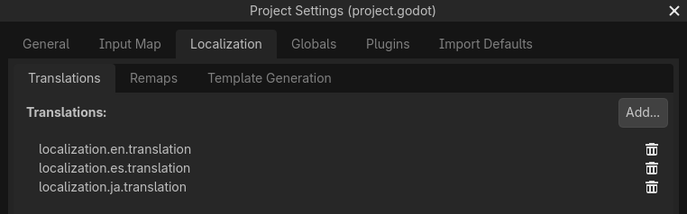
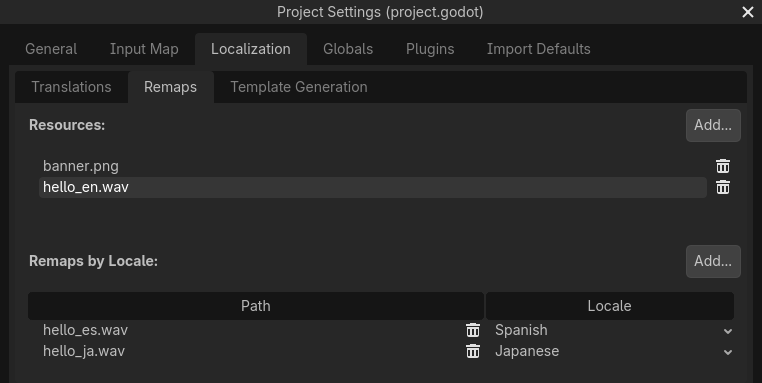
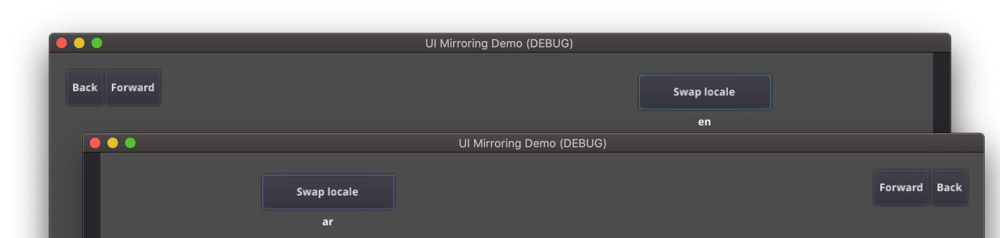
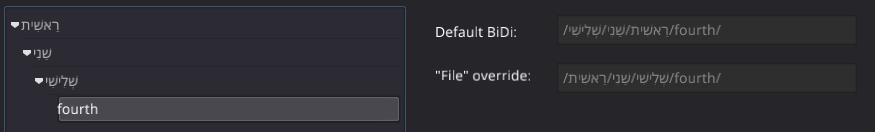
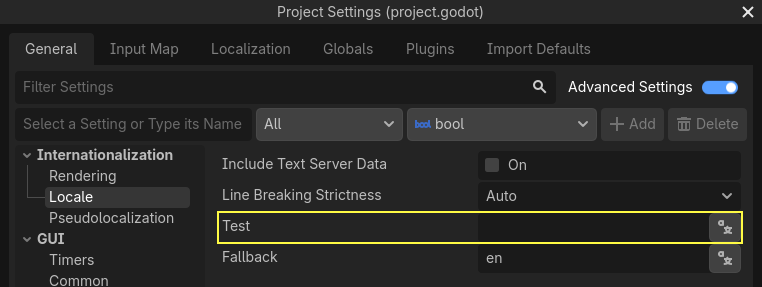
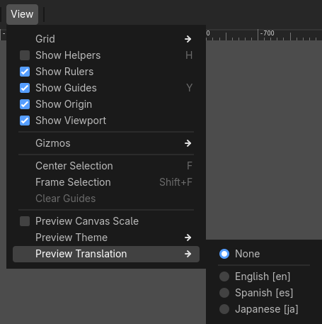
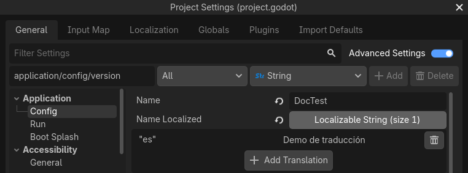

Quốc tế hóa game
Giới thiệu
Trong khi các game indie hoặc game ngách thường không cần bản địa hóa, các game nhắm tới thị trường rộng lớn hơn thường cần bản địa hóa. Godot cung cấp nhiều công cụ giúp quá trình này đơn giản hơn, vì vậy bài hướng dẫn này giống một tập hợp các mẹo và thủ thuật hơn.
Bản địa hóa thường do các studio chuyên biệt được thuê thực hiện. Dù có rất nhiều phần mềm và định dạng tệp dành cho việc này, cách phổ biến nhất để bản địa hóa cho đến nay vẫn là dùng bảng tính. Quá trình tạo bảng tính và import chúng đã được trình bày trong bài hướng dẫn Import bản dịch. Nếu bạn chưa đọc trang Importing translations, chúng tôi khuyên bạn hãy đọc nó trước khi đọc trang này.
Ghi chú
Chúng ta sẽ dùng demo chính thức làm ví dụ; bạn có thể tải nó từ Asset Library.
Cấu hình bản dịch đã import
Các bản dịch có thể được cập nhật và import lại khi chúng thay đổi, nhưng chúng vẫn phải được thêm vào dự án. Việc này được thực hiện trong :

Hộp thoại trên được dùng để thêm hoặc xóa bản dịch trên toàn dự án.
Bản địa hóa resource
Bạn cũng có thể yêu cầu Godot dùng các phiên bản thay thế của asset (resource) tùy theo ngôn ngữ hiện tại. Điều này có thể dùng cho hình ảnh đã bản địa hóa, chẳng hạn biển quảng cáo trong game, hoặc giọng nói đã bản địa hóa.
Có thể dùng tab Remaps cho việc này:

Chọn resource cần remap rồi thêm một số phương án thay thế cho từng locale.
Ghi chú
Hệ thống remap resource không hỗ trợ DynamicFont. Để dùng các phông chữ khác nhau tùy theo hệ chữ viết của ngôn ngữ, hãy dùng hệ thống phông dự phòng (fallback) của DynamicFont, cho phép bạn định nghĩa bao nhiêu phông dự phòng tùy thích.
Ưu điểm của hệ thống phông dự phòng của DynamicFont là nó hoạt động bất kể ngôn ngữ hiện tại, rất lý tưởng cho những thứ như chat nhiều người chơi, nơi ngôn ngữ văn bản có thể không khớp với ngôn ngữ của client.
Tự động đặt ngôn ngữ
Nên mặc định dùng ngôn ngữ ưa thích của người dùng, có thể lấy qua OS.get_locale_language(). Nếu game của bạn không có ngôn ngữ đó, nó sẽ dùng giá trị Fallback trong , hoặc en nếu để trống. Tuy vậy, vẫn nên cho phép người chơi đổi ngôn ngữ trong game vì nhiều lý do (ví dụ chất lượng bản dịch hoặc sở thích của người chơi).
var language = "automatic"
# Load here language from the user settings file
if language == "automatic":
var preferred_language = OS.get_locale_language()
TranslationServer.set_locale(preferred_language)
else:
TranslationServer.set_locale(language)
Locale và ngôn ngữ
Một locale thường là sự kết hợp giữa một ngôn ngữ với một vùng hoặc quốc gia, nhưng cũng có thể chứa thông tin như hệ chữ viết hoặc biến thể.
Ví dụ:
en: Tiếng Anhen_GB: Tiếng Anh ở Vương quốc Anh / tiếng Anh-Anhen_US: Tiếng Anh ở Hoa Kỳ / tiếng Anh-Mỹen_DE: Tiếng Anh ở Đức
Game indie thường chỉ cần quan tâm đến ngôn ngữ, nhưng hãy đọc tiếp để biết thêm thông tin.
Lý do locale tồn tại có thể được minh họa qua Hoa Kỳ và Vương quốc Anh. Cả hai đều nói cùng một ngôn ngữ (tiếng Anh), nhưng khác nhau ở nhiều mặt:
Chính tả: ví dụ gray (Mỹ), grey (Anh)
Cách dùng từ: ví dụ eggplant (Mỹ), aubergine (Anh)
Đơn vị hoặc tiền tệ: ví dụ feet/inch (Mỹ), mét/cm (Anh)
Tuy nhiên, mọi thứ có thể phức tạp hơn. Hãy tưởng tượng bạn cung cấp nội dung khác nhau ở châu Âu và ở Trung Quốc (ví dụ trong một game MMO). Bạn sẽ cần dịch từng biến thể nội dung đó sang nhiều ngôn ngữ, đồng thời lưu và nạp chúng cho phù hợp.
Chuyển key thành văn bản
Một số control, như Button và Label, sẽ tự động lấy bản dịch nếu văn bản của chúng khớp với một translation key. Ví dụ, nếu văn bản của một label là MAIN_SCREEN_GREETING1 và key đó tồn tại trong bản dịch hiện tại, văn bản sẽ tự động được dịch.
Hành vi dịch tự động này có thể không mong muốn trong một số trường hợp. Chẳng hạn, khi dùng Label để hiển thị tên người chơi, nhiều khả năng bạn không muốn tên người chơi bị dịch nếu nó trùng với một translation key. Để tắt dịch tự động trên một node cụ thể, hãy đặt Auto Translate > Mode thành Disabled trong Inspector.
Trong code, có thể dùng hàm Object.tr(). Hàm này chỉ đơn giản tra cứu văn bản trong các bản dịch và chuyển đổi nếu tìm thấy:
level.text = tr("LEVEL_5_NAME")
status.text = tr("GAME_STATUS_%d" % status_index)
level.Text = Tr("LEVEL_5_NAME");
status.Text = Tr($"GAME_STATUS_{statusIndex}");
Ghi chú
Nếu không có văn bản nào hiển thị sau khi đổi ngôn ngữ, hãy thử dùng phông chữ khác. Phông chữ mặc định của dự án chỉ hỗ trợ một tập con của bộ ký tự Latin-1, không thể dùng để hiển thị các ngôn ngữ như tiếng Nga hay tiếng Trung.
Một nguồn phông chữ đa ngôn ngữ tốt là Noto Fonts. Hãy nhớ tải đúng biến thể nếu bạn dùng một ngôn ngữ ít phổ biến.
Sau khi tải phông chữ, hãy nạp tệp TTF vào một resource DynamicFont và dùng nó làm phông chữ tùy chỉnh cho node Control của bạn. Để tái sử dụng tốt hơn, hãy gắn một resource Theme mới cho node Control gốc và định nghĩa DynamicFont làm Default Font trong theme.
Placeholder
Để dùng placeholder trong các chuỗi đã dịch, hãy dùng Chuỗi định dạng trong GDScript hoặc tính năng tương đương trong C#. Điều này cho phép người dịch tự do di chuyển vị trí của placeholder trong chuỗi, giúp bản dịch nghe tự nhiên hơn. Nên dùng placeholder có tên với hàm String.format() bất cứ khi nào có thể, vì chúng còn cho phép người dịch chọn thứ tự xuất hiện của các placeholder:
# The placeholder's locations can be changed, but not their order.
# This will probably not suffice for some target languages.
message.text = tr("%s picked up the %s") % ["Ogre", "Sword"]
# The placeholder's locations and order can be changed.
# Additionally, this form gives more context for translators to work with.
message.text = tr("{character} picked up the {weapon}").format({character = "Ogre", weapon = "Sword"})
Ngữ cảnh dịch
Nếu bạn dùng tiếng Anh thuần làm chuỗi nguồn (thay vì mã thông điệp LIKE_THIS), bạn có thể gặp sự mơ hồ khi phải dịch cùng một chuỗi tiếng Anh thành các chuỗi khác nhau trong một số ngôn ngữ đích. Bạn có thể tùy chọn chỉ định một ngữ cảnh dịch (translation context) để giải quyết sự mơ hồ này và cho phép các ngôn ngữ đích dùng các chuỗi khác nhau, dù chuỗi nguồn giống hệt nhau:
# "Close", as in an action (to close something).
button.set_text(tr("Close", "Actions"))
# "Close", as in a distance (opposite of "far").
distance_label.set_text(tr("Close", "Distance"))
// "Close", as in an action (to close something).
GetNode<Button>("Button").Text = Tr("Close", "Actions");
// "Close", as in a distance (opposite of "far").
GetNode<Label>("Distance").Text = Tr("Close", "Distance");
Số nhiều
Hầu hết các ngôn ngữ cần các chuỗi khác nhau tùy theo đối tượng ở dạng số ít hay số nhiều. Tuy nhiên, việc hardcode điều kiện "là số nhiều" dựa trên việc có nhiều hơn 1 đối tượng không đúng với mọi ngôn ngữ.
Một số ngôn ngữ có nhiều hơn hai dạng số nhiều, và quy tắc về số lượng đối tượng cần thiết cho mỗi dạng số nhiều cũng khác nhau. Godot hỗ trợ số nhiều hóa (pluralization) để các locale đích có thể tự động xử lý việc này.
Số nhiều hóa chỉ dùng cho số nguyên dương (hoặc bằng 0). Các giá trị âm và số thực thường biểu diễn các đại lượng vật lý mà khái niệm số ít và số nhiều không áp dụng rõ ràng.
var num_apples = 5
label.text = tr_n("There is %d apple", "There are %d apples", num_apples) % num_apples
int numApples = 5;
GetNode<Label>("Label").Text = string.Format(TrN("There is {0} apple", "There are {0} apples", numApples), numApples);
Có thể kết hợp với ngữ cảnh nếu cần:
var num_jobs = 1
label.text = tr_n("%d job", "%d jobs", num_jobs, "Task Manager") % num_jobs
int numJobs = 1;
GetNode<Label>("Label").Text = string.Format(TrN("{0} job", "{0} jobs", numJobs, "Task Manager"), numJobs);
Làm cho control có thể thay đổi kích thước
Cùng một văn bản ở các ngôn ngữ khác nhau có thể chênh lệch rất nhiều về độ dài. Vì vậy, hãy nhớ đọc bài hướng dẫn về Kích thước và anchor, vì việc điều chỉnh động kích thước control có thể giúp ích. Container có thể hữu ích, cũng như các tùy chọn ngắt dòng văn bản có trong Label.
Để kiểm tra xem UI có chứa được các bản dịch có chuỗi dài hơn bản gốc hay không, bạn có thể bật pseudolocalization trong phần Project Settings nâng cao. Tính năng này sẽ thay mọi chuỗi có thể bản địa hóa bằng phiên bản dài hơn của chính chúng, đồng thời thay một số ký tự trong chuỗi gốc bằng phiên bản có dấu (mà vẫn đọc được). Placeholder được giữ nguyên để chúng vẫn hoạt động khi bật pseudolocalization.
Ví dụ, chuỗi Hello world, this is %s! sẽ trở thành [Ĥéłłô ŵôŕłd́, ŧh̀íš íš %s!] khi bật pseudolocalization.
Dù thoạt nhìn có vẻ lạ, pseudolocalization có một số lợi ích:
Nó giúp bạn nhanh chóng phát hiện các chuỗi không thể bản địa hóa, để bạn rà soát và làm cho chúng có thể bản địa hóa (nếu điều đó hợp lý).
Nó giúp bạn kiểm tra các thành phần UI không chứa vừa chuỗi dài. Nhiều ngôn ngữ có bản dịch dài hơn nhiều so với văn bản nguồn, nên điều quan trọng là đảm bảo UI có thể chứa được các chuỗi dài hơn bình thường.
Nó giúp bạn kiểm tra xem phông chữ có chứa đủ mọi ký tự cần thiết để hỗ trợ nhiều ngôn ngữ hay không. Tuy nhiên, vì mục tiêu của pseudolocalization là giữ cho chuỗi gốc đọc được, nó không phải là cách kiểm tra hiệu quả xem một phông chữ có hỗ trợ CJK hay các ngôn ngữ viết từ phải sang trái hay không.
Cài đặt dự án cho phép bạn tinh chỉnh hành vi của pseudolocalization, để bạn có thể tắt một số phần của nó nếu muốn.
TranslationServer
Godot có một server xử lý việc quản lý bản dịch ở mức thấp, gọi là TranslationServer. Bản dịch có thể được thêm hoặc gỡ bỏ trong lúc chạy; ngôn ngữ hiện tại cũng có thể được thay đổi khi chạy.
Văn bản hai chiều và phản chiếu UI
Tiếng Ả Rập và tiếng Do Thái được viết từ phải sang trái (trừ các chữ số và từ Latinh xen lẫn), và giao diện người dùng cho các ngôn ngữ này cũng nên được phản chiếu. Ở một số ngôn ngữ, hình dạng của glyph thay đổi tùy theo các ký tự xung quanh.
Việc hỗ trợ hệ chữ viết hai chiều và phản chiếu UI diễn ra hoàn toàn trong suốt, thông thường bạn không cần thay đổi gì hay phải có hiểu biết về hệ chữ viết cụ thể nào.
Với các ngôn ngữ RTL, Godot sẽ tự động thực hiện các thay đổi sau cho UI:
Phản chiếu các anchor và margin trái/phải.
Hoán đổi căn lề văn bản trái và phải.
Phản chiếu thứ tự theo chiều ngang của các control con trong container, và các mục trong control Tree/ItemList.
Dùng thứ tự phản chiếu cho các phần tử bên trong control (ví dụ: nút thả xuống của OptionButton, căn lề CheckBox/CheckButton, thứ tự cột của List, biểu tượng TreeItem và căn lề đường nối). Trong một số trường hợp, control được phản chiếu sẽ dùng các theme style riêng.
Hệ tọa độ không bị phản chiếu.
Các node không thuộc UI (sprite, v.v.) không bị ảnh hưởng.
Bạn có thể ghi đè hướng văn bản và hướng bố cục của control bằng các thuộc tính control sau:
text_direction, đặt hướng văn bản cơ sở. Khi đặt thành "auto", hướng sẽ phụ thuộc vào ký tự có hướng mạnh đầu tiên trong văn bản theo Thuật toán Hai chiều Unicode (Unicode Bidirectional Algorithm).language, ghi đè locale hiện tại của dự án.Thuộc tính
structured_text_bidi_overridevà callback_structured_text_parsercho phép xử lý đặc biệt đối với văn bản có cấu trúc.layout_direction, ghi đè việc phản chiếu control.

Xem thêm
Bạn có thể xem cách sắp chữ từ phải sang trái hoạt động thực tế qua dự án demo BiDI and Font Features.
Thêm dữ liệu break iterator vào dự án đã xuất
Một số ngôn ngữ được viết không có dấu cách. Ở các ngôn ngữ đó, việc ngắt từ và ngắt dòng đòi hỏi nhiều hơn các quy tắc dựa trên chuỗi ký tự. Godot có kèm dữ liệu break iterator dựa trên quy tắc và từ điển của ICU, nhưng theo mặc định dữ liệu này không được đưa vào các dự án đã xuất.
Để đưa dữ liệu này vào, hãy vào và bật Include Text Server Data, rồi xuất dự án. Dữ liệu break iterator có kích thước khoảng 4 MB.
Ghi đè BiDi cho văn bản có cấu trúc
Thuật toán BiDi của Unicode được thiết kế để làm việc với văn bản tự nhiên và không thể xử lý văn bản có thứ tự ở cấp cao hơn, như tên file, URI, địa chỉ email, biểu thức chính quy hay mã nguồn.

Ví dụ, đường dẫn của cấu trúc thư mục được minh họa ở đây sẽ bị hiển thị sai (control "LineEdit" phía trên). Kiểu ghi đè văn bản có cấu trúc "File" sẽ tách văn bản thành các đoạn, sau đó áp dụng thuật toán BiDi cho từng đoạn riêng biệt để hiển thị đúng tên thư mục ở bất kỳ ngôn ngữ nào và giữ đúng thứ tự các thư mục (control "LineEdit" phía dưới).
Các callback tùy chỉnh cho phép ghi đè BiDi cho các loại văn bản có cấu trúc khác.
Bản địa hóa số
Các control được thiết kế riêng cho việc nhập hoặc hiển thị số (ví dụ ProgressBar, SpinBox) sẽ tự động dùng hệ chữ số đã bản địa hóa; với các control khác, có thể dùng TextServer.format_number(string, language) để chuyển chữ số Ả Rập phương Tây (0..9) sang hệ chữ số đã bản địa hóa và TextServer.parse_number(string, language) để chuyển ngược lại.
Bản địa hóa biểu tượng và hình ảnh
Các biểu tượng có mũi tên chỉ sang trái và phải có thể cần được đảo ngược cho các locale tiếng Ả Rập và tiếng Do Thái, trong trường hợp chúng biểu thị chuyển động hoặc hướng (ví dụ nút quay lại/tiến tới). Nếu không, chúng có thể giữ nguyên.
Kiểm thử bản dịch
Bạn có thể muốn kiểm tra bản dịch của dự án trước khi phát hành. Godot cung cấp ba cách để làm việc này.
Trong (khi đã bật cài đặt nâng cao) có thuộc tính Test. Hãy đặt thuộc tính này thành mã locale của ngôn ngữ bạn muốn kiểm tra. Godot sẽ chạy dự án với locale đó khi dự án được chạy (dù từ trình chỉnh sửa hay khi đã xuất).

Lưu ý rằng vì đây là một cài đặt dự án, nó sẽ xuất hiện trong hệ thống quản lý phiên bản khi được đặt thành một giá trị khác rỗng. Vì vậy, bạn nên đặt lại nó về giá trị rỗng trước khi commit thay đổi vào hệ thống quản lý phiên bản.
Thứ hai, trong trình chỉnh sửa, hãy nhấp vào trên thanh trên cùng, rồi đi xuống Preview Translation và chọn ngôn ngữ bạn muốn xem trước.

Toàn bộ văn bản trong các scene ở trình chỉnh sửa giờ sẽ được hiển thị bằng ngôn ngữ đã chọn.
Bản dịch cũng có thể được kiểm tra khi chạy Godot từ dòng lệnh. Ví dụ, để kiểm tra trò chơi bằng tiếng Pháp, có thể truyền đối số sau:
godot --language fr
Dịch tên dự án
Tên dự án sẽ trở thành tên ứng dụng khi xuất sang các hệ điều hành và nền tảng khác nhau. Để chỉ định tên dự án bằng nhiều ngôn ngữ, hãy vào . Tại đây, nhấp vào nút , rồi nút . Thao tác này sẽ đưa bạn tới một trang nơi bạn có thể chọn ngôn ngữ (và quốc gia nếu cần) cho bản dịch tên dự án. Sau đó, bạn có thể nhập tên đã bản địa hóa.

Nếu bạn không chắc nên dùng mã ngôn ngữ nào, hãy tham khảo danh sách mã locale.